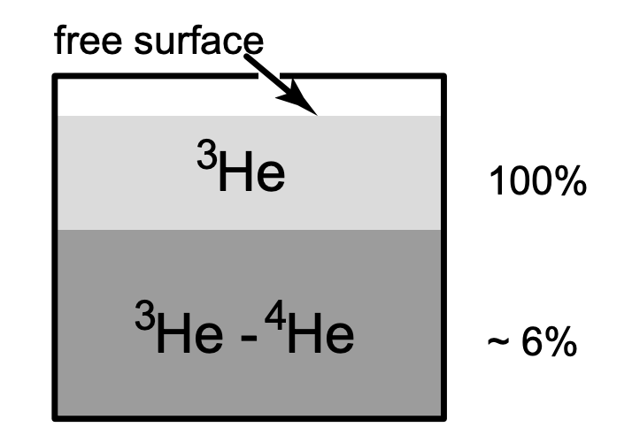

<!DOCTYPE html>
<html lang="zh-CN">

<head><meta charset="UTF-8">
<meta name="viewport" content="width=device-width">
<meta name="theme-color" content="#222" media="(prefers-color-scheme: dark)" />
<meta name="generator" content="Hugo 0.101.0" />
<link rel="shortcut icon" type="image/x-icon" href="/imgs/my_logo.png">
<link rel="icon" type="image/x-icon" href="/imgs/my_logo.png">
<link rel="icon" type="image/png" sizes="16x16" href="/imgs/my_logo.png">
<link rel="icon" type="image/png" sizes="32x32" href="/imgs/my_logo.png">
<link rel="apple-touch-icon" sizes="180x180" href="/imgs/my_logo.png">
<meta itemprop="name" content="低温测量相关的传热问题" />
<meta itemprop="description" content="制冷机运行涉及的传热过程" />
<meta itemprop="datePublished" ZgotmplZ />
<meta itemprop="dateModified" ZgotmplZ />
<meta itemprop="image" content="https://yuanlucas.github.io/imgs/my_avatar.png" />
<meta itemprop="keywords" content="热处理,制冷机" />

<meta property="og:type" content="article" />
<meta property="og:title" content="低温测量相关的传热问题" />
<meta property="og:description" content="制冷机运行涉及的传热过程" />
<meta property="og:image" content="/imgs/my_avatar.png" />
<meta property="og:image:width" content="312" />
<meta property="og:image:height" content="312" />
<meta property="og:image:type" content="image/jpeg/png/svg/jpg" />
<meta property="og:url" content="https://yuanlucas.github.io/posts/%E4%BD%8E%E6%B8%A9%E6%B5%8B%E9%87%8F/"/>
<meta property="og:site_name" content="klucas 的个人网站" />
<meta property="og:locale" content="zh-CN"/>
<meta property="article:author" content="klucas" />
<meta property="article:published_time" content="2022-07-29 00:00:00 &#43;0000 UTC" />
<meta property="article:modified_time" content="2022-08-07 00:00:00 &#43;0000 UTC" />


  <link type="text/css" rel="stylesheet" href="https://unpkg.com/@fortawesome/fontawesome-free@6.1.2/css/all.min.css" />
  <link type="text/css" rel="stylesheet" href="https://unpkg.com/animate.css@3.1.1/animate.min.css" />


  <link rel="stylesheet" href="/css/main.min.cfb74a9c22d487dd8b0fd652e295cf01eeacc4eb37ebf8fe1c06dc5cb24ccf73.css">
  <style type="text/css">
    .post-footer hr:after {
      content: "~ 我可是有底线的哟 ~";
    }
  </style>
  <script class="next-config" data-name="page" type="application/json">{"comments":false,"isHome":false,"isPage":true,"path":"%E4%BD%8E%E6%B8%A9%E6%B5%8B%E9%87%8F","permalink":"https://yuanlucas.github.io/posts/%E4%BD%8E%E6%B8%A9%E6%B5%8B%E9%87%8F/","title":"低温测量相关的传热问题"}</script>
  <script type="text/javascript">
  document.addEventListener('DOMContentLoaded', () => {
    var script = document.createElement('script');
      
    script.charset = "UTF-8";
    script.id      = "LA_COLLECT";
    script.src     = "https:\/\/sdk.51.la\/js-sdk-pro.min.js";
    script.async   = "true"
    script.onload = function() {
    
      LA.init({ id: "JlSteTd88WkbJxE2",ck: "JlSteTd88WkbJxE2", autoTrack:true });
    
    }

  document.head.appendChild(script);
});
</script>


  <title>低温测量相关的传热问题 - klucas 的个人网站</title>
  <noscript>
    <link rel="stylesheet" href="/css/noscript.css">
  </noscript>
</head>

<body itemscope itemtype="http://schema.org/WebPage"  class="use-motion" >
  <div class="headband"></div>
  <main class="main">
    <header class="header" itemscope itemtype="http://schema.org/WPHeader">
      <div class="header-inner">
<div class="site-brand-container">
  <div class="site-nav-toggle">
    <div class="toggle" aria-label="切换导航栏" role="button">
        <span class="toggle-line"></span>
        <span class="toggle-line"></span>
        <span class="toggle-line"></span>
    </div>
  </div>

  <div class="site-meta">

    <a href="/" class="brand" rel="start">
      <i class="logo-line"></i>
      <h1 class="site-title">klucas 的个人网站</h1>
      <i class="logo-line"></i>
    </a>
    
      <p class="site-subtitle" itemprop="description">记录学习生活</p>
  </div>

  <div class="site-nav-right">
    <div class="toggle popup-trigger">
      
      <i class="fa fa-search fa-fw fa-lg"></i>
    </div>
  </div>
</div>

<nav class="site-nav">
  <ul class="main-menu menu">
    <li class="menu-item menu-item-home">
      <a href="/" class="hvr-icon-pulse " rel="section"><i class="fa fa-home hvr-icon"></i>首页
      </a>
    </li>
    <li class="menu-item menu-item-about">
      <a href="/about.html" class="hvr-icon-pulse " rel="section"><i class="fa fa-user hvr-icon"></i>关于
      </a>
    </li>
    <li class="menu-item menu-item-archives">
      <a href="/posts/" class="hvr-icon-pulse " rel="section"><i class="fa fa-archive hvr-icon"></i>归档
      </a>
    </li>
    <li class="menu-item menu-item-search">
      <a role="button" class="popup-trigger hvr-icon-pulse"><i class="fa fa-search fa-fw hvr-icon"></i>搜索
      </a>
    </li>
  </ul>
</nav>
      </div>
      <div class="toggle sidebar-toggle" role="button">
  <span class="toggle-line"></span>
  <span class="toggle-line"></span>
  <span class="toggle-line"></span>
</div>
<aside class="sidebar">
  <div class="sidebar-inner sidebar-nav-active sidebar-toc-active">
    <ul class="sidebar-nav">
      <li class="sidebar-nav-toc">
        文章目录
      </li>
      <li class="sidebar-nav-overview">
        站点概览
      </li>
    </ul>
    <div class="sidebar-panel-container">
      
      <div class="post-toc-wrap sidebar-panel">
        <div class="post-toc animated"><nav id="TableOfContents">
  <ul>
    <li>
      <ul>
        <li><a href="#1-热传导">1. 热传导</a>
          <ul>
            <li><a href="#wiedemann-franz-law-for-metals">Wiedemann-Franz Law (for metals)</a></li>
            <li><a href="#热导率">热导率</a></li>
            <li><a href="#热传导功率估算">热传导功率估算</a></li>
          </ul>
        </li>
        <li><a href="#2-热对流">2. 热对流</a>
          <ul>
            <li><a href="#常压下的热对流">常压下的热对流</a></li>
            <li><a href="#低压下的热对流">低压下的热对流</a></li>
          </ul>
        </li>
        <li><a href="#3-热辐射">3. 热辐射</a>
          <ul>
            <li><a href="#stefen-boltzmann-equation">Stefen-Boltzmann Equation</a></li>
          </ul>
        </li>
        <li><a href="#4-液体固体界面的传热">4. 液体固体界面的传热</a>
          <ul>
            <li><a href="#液氦固体界面">液氦固体界面</a></li>
            <li><a href="#液氦固体界面-1">液氦固体界面</a></li>
          </ul>
        </li>
        <li><a href="#5-固体界面的传热">5. 固体界面的传热</a></li>
        <li><a href="#6-固体气体界面的传热">6. 固体气体界面的传热</a></li>
      </ul>
    </li>
  </ul>
</nav></div>
      </div>
      
      <div class="site-overview-wrap sidebar-panel">
        
<div class="site-author site-overview-item animated" itemprop="author" itemscope itemtype="http://schema.org/Person">
    
  <p class="site-author-name" itemprop="name">klucas</p>
  <div class="site-description" itemprop="description">一位喜欢撸猫的研究僧。</div>
</div>
<div class="site-state-wrap site-overview-item animated">
  <nav class="site-state">
    <div class="site-state-item site-state-posts">
      <a href="/posts/">
        <span class="site-state-item-count">15</span>
        <span class="site-state-item-name">日志</span>
      </a>
    </div>
    <div class="site-state-item site-state-categories">
      <a href="/categories/">
        <span class="site-state-item-count">4</span>
        <span class="site-state-item-name">分类</span>
      </a>
    </div>
    <div class="site-state-item site-state-tags">
      <a href="/tags/">
        <span class="site-state-item-count">11</span>
        <span class="site-state-item-name">标签</span>
      </a>
    </div>
  </nav>
</div>
<div class="links-of-social site-overview-item animated">


  <span class="links-of-social-item">
    <a href="https://github.com/YuanLucas" title="Github → https://github.com/YuanLucas" rel="noopener" class="hvr-icon-pulse" target="_blank">
      <i class="fab fa-github fa-fw  hvr-icon "></i>Github
    </a>
  </span>
  <span class="links-of-social-item">
    <a href="mailto:yuanzheheng@sina.com" title="E-Mail → mailto:yuanzheheng@sina.com" rel="noopener" class="hvr-icon-pulse" target="_blank">
      <i class="fa fa-envelope fa-fw  hvr-icon "></i>E-Mail
    </a>
  </span>
</div>
<div class="cc-license animated" itemprop="license">
  <a href="https://creativecommons.org/licenses/by-nc-sa/4.0/deed.zh" class="cc-opacity" rel="noopener" target="_blank" title="共享知识">
    
  </a>
</div>
<div class="links-of-blogroll site-overview-item animated">
  <div class="links-of-blogroll-title">
    <i class="fa fa-globe fa-fw"></i>友情链接
  </div>
  <ul class="links-of-blogroll-list">
    <li class="links-of-blogroll-item">
      <a href="https://www.guanjihuan.com/" title="https://www.guanjihuan.com/" target="_blank">关济寰</a>
    </li>
    <li class="links-of-blogroll-item">
      <a href="https://ericrzhu.com/" title="https://ericrzhu.com/" target="_blank">HRZ</a>
    </li>
  </ul>
</div>
      </div>
    </div>
    <div class="back-to-top animated" role="button" aria-label="">
      <i class="fa fa-arrow-up"></i>
      <span>0%</span>
    </div>
  </div>
</aside>
<div class="sidebar-dimmer"></div>
    </header>
    
    
  <div class="reading-progress-bar"></div>
  <a role="button" class="book-mark-link book-mark-link-fixed"></a>
<a href="https://github.com/YuanLucas" rel="noopener external nofollow noreferrer" target="_blank" title="Follow me on GitHub" class="exturl github-corner">
  <svg width="80" height="80" viewBox="0 0 250 250" aria-hidden="true"><path d="M0,0 L115,115 L130,115 L142,142 L250,250 L250,0 Z"></path><path d="M128.3,109.0 C113.8,99.7 119.0,89.6 119.0,89.6 C122.0,82.7 120.5,78.6 120.5,78.6 C119.2,72.0 123.4,76.3 123.4,76.3 C127.3,80.9 125.5,87.3 125.5,87.3 C122.9,97.6 130.6,101.9 134.4,103.2" fill="currentColor" style="transform-origin: 130px 106px;" class="octo-arm"></path><path d="M115.0,115.0 C114.9,115.1 118.7,116.5 119.8,115.4 L133.7,101.6 C136.9,99.2 139.9,98.4 142.2,98.6 C133.8,88.0 127.5,74.4 143.8,58.0 C148.5,53.4 154.0,51.2 159.7,51.0 C160.3,49.4 163.2,43.6 171.4,40.1 C171.4,40.1 176.1,42.5 178.8,56.2 C183.1,58.6 187.2,61.8 190.9,65.4 C194.5,69.0 197.7,73.2 200.1,77.6 C213.8,80.2 216.3,84.9 216.3,84.9 C212.7,93.1 206.9,96.0 205.4,96.6 C205.1,102.4 203.0,107.8 198.3,112.5 C181.9,128.9 168.3,122.5 157.7,114.1 C157.9,116.9 156.7,120.9 152.7,124.9 L141.0,136.5 C139.8,137.7 141.6,141.9 141.8,141.8 Z" fill="currentColor" class="octo-body"></path></svg>
</a>

<noscript>
  <div class="noscript-warning">Theme NexT works best with JavaScript enabled</div>
</noscript>
    <div class="main-inner post posts-expand">
      
  <div class="post-block">
  <article itemscope itemtype="http://schema.org/Article" class="post-content" lang="">
    <link itemprop="mainEntityOfPage" href="https://yuanlucas.github.io/posts/%E4%BD%8E%E6%B8%A9%E6%B5%8B%E9%87%8F/">
    <span hidden itemprop="author" itemscope itemtype="http://schema.org/Person">
      <meta itemprop="image" content="/imgs/my_avatar.png">
      <meta itemprop="name" content="klucas">
    </span>
    <span hidden itemprop="publisher" itemscope itemtype="http://schema.org/Organization">
      <meta itemprop="name" content="klucas">
      <meta itemprop="description" content="一位喜欢撸猫的研究僧。">
    </span>
    <span hidden itemprop="post" itemscope itemtype="http://schema.org/CreativeWork">
      <meta itemprop="name" content="低温测量相关的传热问题">
      <meta itemprop="description" content="制冷机运行涉及的传热过程">
    </span>
    <header class="post-header">
       <h1 class="post-title" itemprop="name headline">低温测量相关的传热问题 </h1> <div class="post-meta-container">
  <div class="post-meta-items">
    


<span class="post-meta-item">
  <span class="post-meta-item-icon">
    <i class="far fa-calendar"></i>
  </span>
  <span class="post-meta-item-text">发表于：</span>
  <time title="发表于：2022-07-29 00:00:00 &#43;0000 UTC" itemprop="dateCreated datePublished" datetime="2022-07-29 00:00:00 &#43;0000 UTC">2022-07-29</time>
</span>
    

<span class="post-meta-item">
  <span class="post-meta-item-icon">
    <i class="far fa-calendar-check"></i>
  </span>
  <span class="post-meta-item-text">更新于：</span>
  <time title="修改时间：2022-08-07T00:00:00&#43;00:00" itemprop="dateModified" datetime="2022-08-07T00:00:00&#43;00:00">2022-08-07</time>
</span>
    
<span class="post-meta-item">
  <span class="post-meta-item-icon">
    <i class="far fa-folder-open"></i>
  </span>
  <span class="post-meta-item-text">分类于：</span>
  <span itemprop="about" itemscope itemtype="http://schema.org/Thing">
    <a href="/categories/%E7%83%AD%E5%8A%9B%E5%AD%A6" itemprop="url" rel="index">
      <span itemprop="name">热力学</span>
    </a>
  </span>
</span>
  </div>
  <div class="post-meta-items">
    
<span class="post-meta-item" title="字数">
  <span class="post-meta-item-icon">
    <i class="far fa-file-word"></i>
  </span>
  <span class="post-meta-item-text">字数：</span><span>1727</span>
</span>
    
<span class="post-meta-item" title="阅读">
  <span class="post-meta-item-icon">
    <i class="far fa-clock"></i>
  </span>
  <span class="post-meta-item-text">阅读：&asymp;</span>
  <span>4分钟</span>
</span>

    
<span class="post-meta-item" title="浏览">
  <span class="post-meta-item-icon">
    <i class="far fa-eye"></i>
  </span>
  <span class="post-meta-item-text">
  浏览：
  </span>
  <span class="waline-pageview-count" data-path="/posts/%E4%BD%8E%E6%B8%A9%E6%B5%8B%E9%87%8F/"><i class="fa fa-sync fa-spin"></i></span>
</span>

  </div>
  
</div>

    </header>
    <div class="post-body" itemprop="articleBody">
      
  <p>  本文讨论低温测量中的传热问题。</p>
<p>参考文献：</p>
<ol>
<li>导师做的组会PPT.</li>
<li>Jack W. Ekin., 2006, &ldquo;Experimental Techniques for Low-Temperature Measurements: Cryostat Design, Material Properties and Superconductor Critical-Current Testing&rdquo;. United States.</li>
</ol>
<hr>
<p>
<a href="https://wulixb.iphy.ac.cn/fileWLXB/journal/article/wlxb/2021/23/PDF/23-20211760.pdf" title="稀释制冷机原理" rel="noopener external nofollow noreferrer" target="_blank" class=" exturl">
    稀释制冷机原理
    <i class="fa fa-external-link-alt"></i>
</a></p>
<p>参考文献：付柏山, 廖奕, 周俊. 稀释制冷机及其中的热交换问题. 物理学报, 2021, 70(23): 230202. doi: 10.7498/aps.70.20211760</p>
<p>稀释制冷机在0K时分成稀相与浓相两层：</p>
<p>
<a href="http://uk.lowtemp.org/4-Bradley.pdf" title="&lt;img src=&#34;phase_boundary.png&#34; width=&#34;50%&#34; height=&#34;50%&#34;&gt;" rel="noopener external nofollow noreferrer" target="_blank" class=" exturl">
    
    <i class="fa fa-external-link-alt"></i>
</a></p>
<hr>
<p>$$
\text{传热}\begin{cases}\text{热传导(conductive heat transfer)}\quad\text{固体}\\
\text{热对流(convective heat transer)}\quad\text{液体和气体}\\
\text{热辐射(radiative heat transfer)}\quad\text{任何物体}
\end{cases}
$$</p>
<h2 id="1-热传导">1. 热传导</h2>
<p>  用于稀释制冷机内部连接处的材料：</p>
<ul>
<li>高电导率</li>
<li>低热导率</li>
</ul>
<h3 id="wiedemann-franz-law-for-metals">Wiedemann-Franz Law (for metals)</h3>
<p>$$
\frac{\kappa}{\sigma}=LT
$$
Lorenz number:
$$
L=\frac{\pi^2}{3}(\frac{k_B}{e})^2
$$
参考文献：Franz, R.; Wiedemann, G. (1853). &ldquo;Ueber die Wärme-Leitungsfähigkeit
der Metalle&rdquo;. Annalen der Physik (in German). 165 (8): 497–531</p>
<p>  不适用于超导体和微波同轴线（趋肤效应）。</p>
<h3 id="热导率">热导率</h3>
<p>  热导率有电子和声子两部分的贡献。</p>
<p>$$ \kappa = \kappa_e + \kappa_{ph} $$</p>
<p>$$\kappa_e = \frac{1}{3}c_ev_Fl_e\propto T$$</p>
<p>$$\kappa_{ph}=\frac{1}{3}c_{ph}v_{ph}l_{ph}\propto T^3$$</p>
<h4 id="residual-resistive-ratio-rrr">Residual Resistive Ratio (RRR)</h4>
<p>$$ \mathrm{RRR} = \frac{\rho(273 K)}{\rho(0 K)} $$</p>
<h3 id="热传导功率估算">热传导功率估算</h3>
<h4 id="傅立叶定律">傅立叶定律</h4>
<p>$$ \vec{q}=-\kappa \nabla T$$</p>
<p>对于均匀直管情况：
$$\begin{align}
q\mathrm{d}x&amp;=-\kappa(T)\mathrm{d}T \\
\int_0^Lq\mathrm{d}x&amp;=-\int_{T_1}^{T_2}\kappa(T)\mathrm{d}T \\
qL&amp;=\int_0^{T_1}\kappa\mathrm{d}T-\int_0^{T_2}\kappa\mathrm{d}T=\Theta(T_1)-\Theta(T_2)
\end{align}$$</p>
<p>得到热传导功率：</p>
<p>$$ \dot{q}=qA=\frac{A}{l}(\Theta(T_1)-\Theta(T_2)) $$</p>
<p>
<a href="http://www.majer.ch/physics/heatconduction/index.html" title="Online Calculator" rel="noopener external nofollow noreferrer" target="_blank" class=" exturl">
    Online Calculator
    <i class="fa fa-external-link-alt"></i>
</a></p>
<p>
<a href="https://www.lakeshore.com/docs/default-source/product-downloads/literature/lstc_appendixi_l.pdf?sfvrsn=5f2ab85b_4" title="Cryogenic Reference Tables" rel="noopener external nofollow noreferrer" target="_blank" class=" exturl">
    Cryogenic Reference Tables
    <i class="fa fa-external-link-alt"></i>
</a></p>
<h2 id="2-热对流">2. 热对流</h2>
<p>  气体的平均自由程可根据压强不同分成三类情况。</p>
<table>
<thead>
<tr>
<th style="text-align:center">Regime</th>
<th style="text-align:center">Pressure</th>
<th style="text-align:center">Mean Free Path of the Molecules</th>
</tr>
</thead>
<tbody>
<tr>
<td style="text-align:center">Hydrodynamic Regime</td>
<td style="text-align:center">Near Atmospheric Pressure</td>
<td style="text-align:center">Limited by Collisions with Other Gas Molecules</td>
</tr>
<tr>
<td style="text-align:center">Transition Regime</td>
<td style="text-align:center">Low Pressure</td>
<td style="text-align:center">\(l(\mathrm{cm})=2.87\times10^{-3}T^{j+1}/P\)<br>\(j+1=1.147\) for Helium</td>
</tr>
<tr>
<td style="text-align:center">Free Molecule Regime</td>
<td style="text-align:center">Very Low Pressure</td>
<td style="text-align:center">Limited by the Size of Container</td>
</tr>
</tbody>
</table>
<h3 id="常压下的热对流">常压下的热对流</h3>
<p>  两相距 \(d\) ，表面积为\(A\)的平行平面之间的热对流功率：</p>
<p>$$\dot{q}_{gas}=\overline{\kappa}A\frac{\Delta T}{d}\quad(l\ll \text{dimension of container})$$</p>
<p>其中，\(\overline{\kappa}\)为平均导热率：</p>
<p>$$\overline{\kappa}=\Delta T^{-1}\int^{T_2}_{T_1}\kappa(T)\mathrm{d}T$$</p>
<p>\(\Delta T \equiv T_2 -T_1\)</p>
<h4 id="热导率-1">热导率</h4>
<p>$$ \kappa = c C_V\quad(l\ll d) $$</p>
<p>其中\(C_V\)为每克气体的等容热容；\(c\)为比例系数，对于常见冷却气体如氦气、氢气、氮气和氧气，其值介于 1.5 至 2.5 之间。</p>
<h3 id="低压下的热对流">低压下的热对流</h3>
<p>  两同心球面或圆柱面间的热对流功率：
$$ \dot{q}_{gas} = k a_0 A_i P \Delta T $$
\(A_i\)为内侧圆柱或球的表面积。对于氦气，氢气和空气，分别有\(k=2.1, 4.4, 1.2\)。</p>
<p>$$a_0=a_1a_2/[a_2+(A_1/A_2)(1-a_2)a_1]$$
其中\(a_1, a_2\)分别为内外面的调节系数 
<a href="https://thermopedia.com/content/286/" title="(accormadation coefficient)" rel="noopener external nofollow noreferrer" target="_blank" class=" exturl">
    (accormadation coefficient)
    <i class="fa fa-external-link-alt"></i>
</a>，一般在0.3至1之间，\(A_1, A_2\)分别为内外面的面积。</p>
<h2 id="3-热辐射">3. 热辐射</h2>
<h3 id="stefen-boltzmann-equation">Stefen-Boltzmann Equation</h3>
<p>  单个物体的热辐射功率为：
$$ \dot{q}_{rad}=\sigma\varepsilon A T^4$$</p>
<p>\(\sigma=5.67\times10^{-8}\mathrm{W/(m^2K^4)}\)。\(\varepsilon\)为发射率，\(\varepsilon\equiv1-R_f\)。</p>
<p>两物体之间的热辐射功率为：
$$\dot{q}_{rad}=\sigma E A(T_2^4-T_1^4) $$</p>
<p>上式需要分情况使用：</p>
<table>
<thead>
<tr>
<th style="text-align:left">式中项</th>
<th style="text-align:left">平行平面</th>
<th style="text-align:left">同轴圆柱体和同心球体</th>
</tr>
</thead>
<tbody>
<tr>
<td style="text-align:left">\(A\)</td>
<td style="text-align:left">小面面积</td>
<td style="text-align:left">内侧几何体表面积, \(A_1\)</td>
</tr>
<tr>
<td style="text-align:left">镜面反射 \(E\) (\(\varepsilon\ll1, E\ll1)\)</td>
<td style="text-align:left">\(\varepsilon_1\varepsilon_2/(\varepsilon_2+\varepsilon_1-\varepsilon_1\varepsilon_2)\)</td>
<td style="text-align:left">\(\varepsilon_1\varepsilon_2/(\varepsilon_2+\varepsilon_1-\varepsilon_1\varepsilon_2)\)</td>
</tr>
<tr>
<td style="text-align:left">漫反射 \(E\) (\(\varepsilon\approx1, E\approx1)\)</td>
<td style="text-align:left">\(\varepsilon_1\varepsilon_2/(\varepsilon_2+\varepsilon_1-\varepsilon_1\varepsilon_2)\)</td>
<td style="text-align:left">\(\varepsilon_1\varepsilon_2/[\varepsilon_2+(A_2/A_1)(\varepsilon_1-\varepsilon_1\varepsilon_2)]\)</td>
</tr>
</tbody>
</table>
<p>  高度抛光，高电导率的金属的发射率\(\varepsilon\)很小，只有约0.01。根据Drude的经典模型：</p>
<p>$$ \varepsilon\equiv1-R_f=365(\rho/\lambda_r)^{1/2} $$</p>
<p>其中\(\rho\)为电阻率；\(\lambda_r\)是辐射波长，单位为微米。</p>
<p>  抛光能极大降低金属的发射率\(\varepsilon\)。</p>
<p>  此外，\(N\)层金属保护层能将热辐射功率降低至约\(1/(N+1)\)(Scott 1963)。制冷机中常用多层（30-80层）镀铝的对苯二甲酸乙二酯薄膜（Mylar<sup>TM</sup>）或聚酰亚胺薄膜（Kapton<sup>TM</sup>）作为辐射隔绝层，层与层之间抽真空。</p>
<h2 id="4-液体固体界面的传热">4. 液体固体界面的传热</h2>
<h3 id="液氦固体界面">液氦固体界面</h3>
<table>
<thead>
<tr>
<th style="text-align:center">Regime</th>
<th style="text-align:center">Heat Flux</th>
<th style="text-align:center">Temperatrure Difference</th>
<th style="text-align:center">Heat-transfer Rate</th>
</tr>
</thead>
<tbody>
<tr>
<td style="text-align:center">Nonboiling Regime</td>
<td style="text-align:center">\(\ll 10^3\mathrm{W/m^2}\)</td>
<td style="text-align:center"></td>
<td style="text-align:center">Dominated by Convection Currents</td>
</tr>
<tr>
<td style="text-align:center">Nucleate Boiling Regime</td>
<td style="text-align:center">\(\sim 10^3\mathrm{W/m^2}\)</td>
<td style="text-align:center">\(\Delta T\lesssim 0.5\mathrm{K}\)</td>
<td style="text-align:center">\(\dot{q}/A\simeq6\times10^4\Delta T^{2.5}\) <br> (Atmospheric Pressure) <br> \(\dot{q}/A\gtrsim1\times10^4\Delta T^{2.5}\) <br> (Schmidt 1981)</td>
</tr>
<tr>
<td style="text-align:center">Film Boiling Regime</td>
<td style="text-align:center">\(\gtrsim 10^4\mathrm{W/m^2}\)</td>
<td style="text-align:center">\(\Delta T\gtrsim10\mathrm{K}\) <br> (Depending on the Geometry of the Solid)</td>
<td></td>
</tr>
</tbody>
</table>
<p>热流密度在\(10^4\mathrm{W/m^2}\)以下的冷却效果比较好。</p>
<h3 id="液氦固体界面-1">液氦固体界面</h3>
<table>
<thead>
<tr>
<th style="text-align:center">Regime</th>
<th style="text-align:center">Heat Flux</th>
<th style="text-align:center">Temperatrure Difference</th>
<th style="text-align:center">Heat-transfer Rate</th>
</tr>
</thead>
<tbody>
<tr>
<td style="text-align:center">Nucleate Boiling Regime</td>
<td style="text-align:center">\(&lt; 2\times10^5\mathrm{W/m^2}\)</td>
<td style="text-align:center">\(\Delta T\lesssim 10\mathrm{K}\)</td>
<td style="text-align:center">\(\dot{q}/A\simeq5\times10^2\Delta T^{2.5}\) <br> (Richards et al. 1961)</td>
</tr>
<tr>
<td style="text-align:center">Film Boiling Regime</td>
<td style="text-align:center">\(\gtrsim 2\times10^5\mathrm{W/m^2}\)</td>
<td style="text-align:center">\(\Delta T\gtrsim100\mathrm{K}\) <br> (Depending on the Geometry of the Solid)</td>
<td></td>
</tr>
</tbody>
</table>
<p>热流密度在\(2\times10^5\mathrm{W/m^2}\)以下的冷却效果比较好。</p>
<h2 id="5-固体界面的传热">5. 固体界面的传热</h2>
<p>  在处理热锚定时，需要考虑固体界面的传热。</p>
<p>  由于晶格运动，Wiedemann-Franz Law不适用。</p>
<p>  固体连接处有焊接接头（solder joints）和漆接接头、胶接接头（varnish and glue joints），前者的导热性能一般优于后者。</p>
<p>  在连接处施加压力能提高传热性能，大致随压力线性提升，具体由经验公式给出。</p>
<h2 id="6-固体气体界面的传热">6. 固体气体界面的传热</h2>
<p>  当冷却剂在冷却温度为固体时，需要考虑固体气体界面的传热。</p>
<p>$$\dot{q}_{conv}=hA\Delta T$$</p>
<p>\(h\)为对流传热系数，\(A\)为固体表面积。</p>
<p>  对于氦气和氮气，液体的冷却效果比气体的冷却效果好了几个数量级。</p>

    </div>
    <footer class="post-footer">
      

<div class="post-tags">
  
    <a href="/tags/%e7%83%ad%e5%a4%84%e7%90%86">
    热处理
  </a>
    <a href="/tags/%e5%88%b6%e5%86%b7%e6%9c%ba">
    制冷机
  </a>
</div>

<div class="addthis_inline_share_toolbox" style="text-align: center;"></div>
<hr/>


<div class="post-nav">
  <div class="post-nav-next post-nav-item">
    <a href="https://yuanlucas.github.io/posts/%E7%9B%B8%E5%9B%BE/" rel="next" title="相图">
      <i class="fa fa-chevron-left"></i> 相图
    </a>
  </div>
  <div class="post-nav-prev post-nav-item">
    <a href="https://yuanlucas.github.io/posts/introduction-to-quantum-noise/" rel="prev" title="量子噪声介绍和QuTiP模拟">
      量子噪声介绍和QuTiP模拟
      <i class="fa fa-chevron-right"></i>
    </a>
  </div>
</div>
    </footer>
  </article>
</div>
<div class="post-comments">
  <div class="comment-head">
    <div class="comment-headline">
      <i class="fas fa-comments fa-fw"></i>
      <span>评论交流</span>
    </div>
    <div class="comment-switch">
      <span class="first-comment">Giscus</span>
      <span class="switch-btn "></span>
      <span class="second-comment">Waline</span>
    </div>
  </div>
  <div class="comment-wrap">
  
    <div><div class="comment-loading">
  <i class="fa fa-sync fa-spin"></i>
</div><div class="giscus-container"></div>
    </div>
    <div><div class="comment-loading">
  <i class="fa fa-sync fa-spin"></i>
</div><div class="waline-container"></div>
    </div>
  </div>
</div>

    </div>
  </main>
  <footer class="footer">
    <div class="footer-inner">
<div class="copyright">
  &copy;
  <span itemprop="copyrightYear">
    2022
  </span>
  <span class="with-love">
    <i class="fa fa-heart"></i>
  </span>
  <span class="author" itemprop="copyrightHolder">klucas</span>
</div>

<div class="powered-by">
  由 <a href='https://gohugo.io' target='_blank'>Hugo</a> &amp; <a href='https://github.com/hugo-next/hugo-theme-next' target='_blank'>Hugo NexT.Gemini</a> 强力驱动
</div>


    </div>
  </footer>

  <script type="text/javascript" src="https://unpkg.com/animejs@3.2.1/lib/anime.min.js" defer></script>
  <script type="text/javascript" src="https://unpkg.com/mathjax@3.2.0/es5/tex-mml-chtml.js" defer></script>

<script class="next-config" data-name="main" type="application/json">{"artalk":{"cfg":{"placeholder":"请文明发言，谢谢！","server":null,"site":"默认站点"},"css":{"file":"dist/Artalk.css","name":"artalk","version":"2.3.4"},"js":{"file":"dist/Artalk.js","name":"artalk","version":"2.3.4"}},"bookmark":{"color":"#222","enable":true,"save":"manual"},"copybtn":true,"darkmode":true,"giscus":{"cfg":{"category":"Announcements","categoryid":null,"inputposition":"top","mapping":"title","repo":"username/repo_name","repoid":null,"theme":"preferred_color_scheme"},"js":"https://giscus.app/client.js"},"hostname":"https://yuanlucas.github.io","lang":"zh-CN","lazyload":false,"livere":{"js":"https://cdn-city.livere.com/js/embed.dist.js"},"motion":{"async":true,"enable":true,"transition":{"collheader":"fadeInLeft","postblock":"fadeIn","postbody":"fadeInDown","postheader":"fadeInDown","sidebar":"fadeInUp"}},"root":"/","scheme":"Gemini","sidebar":{"display":"post","offset":12,"padding":18,"position":"left","width":256},"utterances":{"cfg":{"issueterm":"pathname","label":"comments","repo":"username/repo-name","theme":"preferred-color-scheme"},"js":"https://utteranc.es/client.js"},"vendor":{"plugins":"unpkg","router":"https://unpkg.com"},"version":"4.1.0","waline":{"cfg":{"emoji":false,"imguploader":false,"pageview":true,"placeholder":"请文明发言","requiredmeta":["nick","mail"],"serverurl":null,"wordlimit":200},"css":{"alias":"waline","file":"dist/waline.css","name":"@waline/client","version":"2.6.1"},"js":{"alias":"waline","file":"dist/waline.js","name":"@waline/client","version":"2.6.1"}}}</script>


<script type="text/javascript" src="/js/main.min.9103b1446281e1f0767c633c3b1acf765516d45aa4c773fd90efd5d2f9011a42.js" defer></script>
</body>

</html>